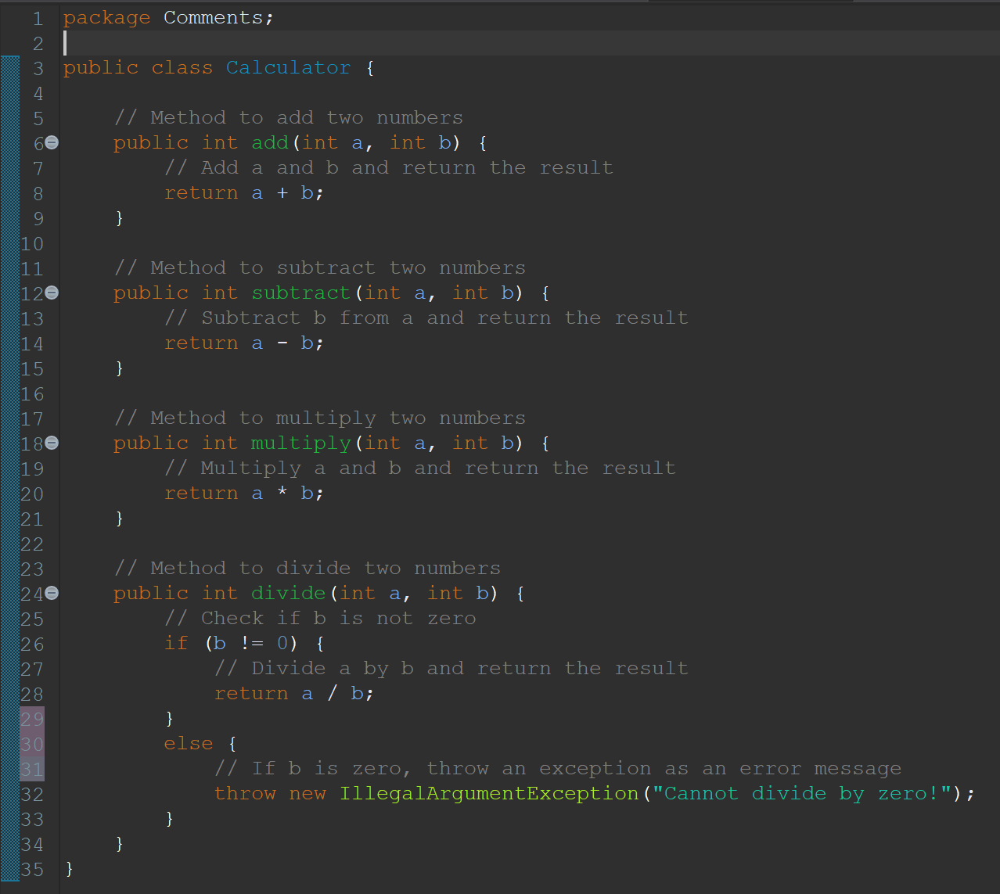
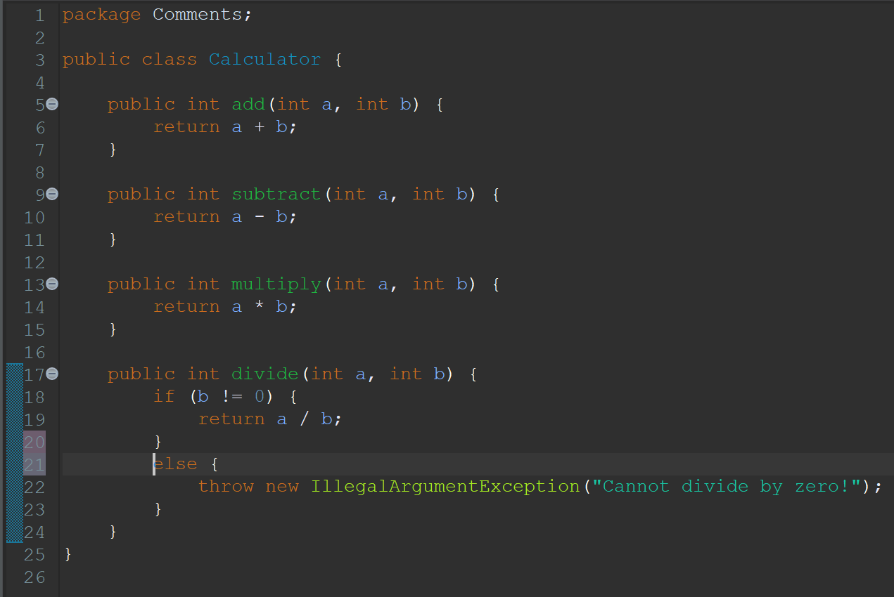

Comments
Definisi
Comments adalah sebuah code smell yang terjadi ketika ada terlalu banyak teks yang ditambahkan ke dalam bagian code tertentu di dalam suatu program. Hal ini bertujuan untuk memberikan penjelasan tentang apa yang dilakukan oleh bagian code tersebut. Namun, penggunaan comments yang berlebihan dapat menyebabkan code smell karena akan membingungkan pembaca code dan menandakan code yang dibuat tidak self-explanatory. Self-explanatory berarti bahwa code yang dibuat harus bisa menjelaskan fungsionalitas dengan jelas kepada pembaca code.
Contoh
Before
Code:
Calculator.java
Alasan:
Setiap method memiliki comments yang menjelaskan fungsi dari method tersebut. Namun, sebagian besar comments hanya menjelaskan hal-hal yang sudah jelas dilakukan oleh suatu code, seperti pada method add, subtract, multiply, dan divide. Hal ini yang membuat comments menjadi redundan dan sebenarnya tidak penting.
After
Code:
Calculator.java
Hasil Perbaikan:
Maka dari itu, seluruh comments perlu dihapus karena code tersebut sudah cukup jelas dalam menggambarkan apa yang dilakukan oleh setiap metode. Hal ini membuat code menjadi lebih bersih dan mudah dibaca tanpa bergantung pada comments yang berlebihan. Comments sebaiknya digunakan untuk memberikan dokumentasi tambahan atau untuk menjelaskan algoritma yang kompleks.